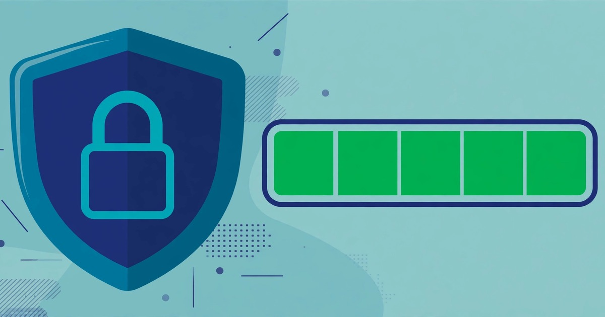

How to Check Password Strength Online
Find out how strong your password really is — before an attacker does — with a live score, a plain-language label, and an estimated crack time.
October 30, 2026 · 6 min read

Most people judge a password by how it looks. If it has a capital letter, a number and a symbol, it feels strong. That feeling is unreliable: a short password with all four character types can still fall quickly, while a long, plain-looking passphrase can hold out far longer.
This guide shows you how to check password strength online in seconds, what the score means, and the simple changes that turn a weak password into a strong one — plus the maths behind the score, so you can judge any password yourself.
What the Password Strength Checker does
The Password Strength Checker is a free, no-signup tool that runs entirely in your browser. You type a password in, and the result updates live as you type. You get three things: a strength score from 0 to 4, a bar and a label running from Very weak to Very strong, and an estimated crack time. Below the result, the page gives three practical tips: make it long, mix character types, and never reuse a password.
Privacy matters more here than for most tools: typing a real password into a random website is risky, because you cannot see where it goes. With this checker, the check runs 100% in your browser — the page itself states that your password is never sent, stored or logged anywhere. That local-only design is the one condition under which testing a real password online is safe.
Check a password in 4 steps
- Open the Password Strength Checker. No account, no signup, no download.
- Type the password into the field. The score, bar, label and estimated crack time update live as you type, so you can watch the result change with every character you add.
- Read the label, not just the bar. The label and estimated crack time tell you more than the bar alone — a password can look nearly full yet be built from a common word.
- Improve it on the spot. Add length first, then variety: an extra word beats an extra symbol. Keep editing until the label reads strong.
A worked example: why length beats cleverness
Guessing a password is a counting problem: with L characters drawn from a set of N, the combinations total N to the power L. Every extra character multiplies the total by N. The numbers below are exact.
- 8 lowercase letters only: 268 = 208,827,064,576 — about 209 billion combinations. That sounds huge, but for an automated guessing program it is a small search space.
- 9 lowercase letters only: 269 = 5,429,503,678,976 — about 5.43 trillion. One extra letter multiplies the space by 26.
- 8 characters mixing lowercase, uppercase and digits: 628 = 218,340,105,584,896 — about 218 trillion, roughly 1,046 times the 8-lowercase total. Variety helps, but at 8 characters the total is still modest.
- 12 characters from all 94 printable characters: 9412 = 475,920,314,814,253,376,475,136 — about 4.76 × 1023.
- 4 random words from a 2,000-word list (illustration): 2,0004 = 16,000,000,000,000 — 16 trillion combinations, and far easier to remember than a random string of symbols. The words must genuinely be random, though — a sentence from a book or a song is not.
The lesson is simple and matches the checker's own advice: length first, variety second. Going from 8 to 12 characters matters more than swapping a letter for a symbol, and a long passphrase you can remember beats a short "clever" password you have to write down.
Password types compared
- Short and common (e.g. a name plus a year): weakest of all: attackers try common passwords and dictionary words first, so it may fall among the first few thousand guesses.
- 8 mixed characters: better than a word, but short: about 218 trillion combinations, the smallest mixed-character total above.
- 12 mixed characters: strong: about 4.76 × 1023 combinations, a space no guessing program can exhaust in any practical time.
- 4 random words: strong and memorable: 16 trillion combinations in the illustration, and one you can remember without writing down.
One caution: these counts assume the attacker must guess blindly. A password that appears in a leaked database, or that someone can guess from your social media, fails instantly no matter how long it is. That is why the checker also warns against common passwords and reuse — the score measures guessing difficulty, not whether the password is already known.
5 mistakes that make a password weak
- Reusing one password everywhere. One breach then opens every account that shares it. A strong, unique password per important account matters more than one extremely strong password used everywhere.
- Using a dictionary word or a name. Guessing programs try real words, names, dates and keyboard patterns first. A password built from a single word is weak even with a capital letter and a number tacked on.
- Trusting predictable substitutions. Replacing letters with lookalike symbols (a with @, o with 0) is so well known that guessing tools try those variants automatically — it adds far less strength than it appears to.
- Testing passwords on untrusted sites. Never type a real password into a checker that sends it to a server; use only a browser-local checker like this one — and even then, prefer testing a similar password rather than the exact one guarding your bank account.
- Confusing encoding with protection. Turning a password into Base64 text is not encryption and not safety — anyone can reverse it instantly. The Base64 Encoder/Decoder is useful for data formats, not for hiding passwords. Real protection is a long, unique password stored in a password manager, plus two-factor authentication where it is offered.
Frequently asked questions
What does the 0–4 score mean?
The checker scores your password from 0 to 4 as you type, with a bar and a label from Very weak to Very strong, plus an estimated crack time. Higher is better, but treat it as a guide to guessing difficulty — not a guarantee, since a leaked or reused password fails regardless.
Is it safe to type my real password into the checker?
With this checker, yes — the check runs 100% in your browser and the page states that nothing is sent, stored or logged. As a general rule, though, never type a real password into a site you have not verified as browser-local, and never test a password on a page that asks you to submit it.
Does a Very strong score mean my account cannot be hacked?
No. A strong password only stops guessing attacks; accounts are also broken into through phishing, leaked databases, reuse and malware. A strong, unique password plus two-factor authentication is what actually protects an account.
Why does the checker say length matters more than symbols?
Because of the counting maths: each extra character multiplies the possible combinations by the whole character set. Adding one character to an 8-letter password multiplies its space 26-fold (from about 209 billion to about 5.43 trillion), while adding a symbol type to the same length raises it far less. That is why the page's first tip is to use at least 12 characters.
Related tools: Password Strength Checker · Password Generator · Base64 Encoder/Decoder